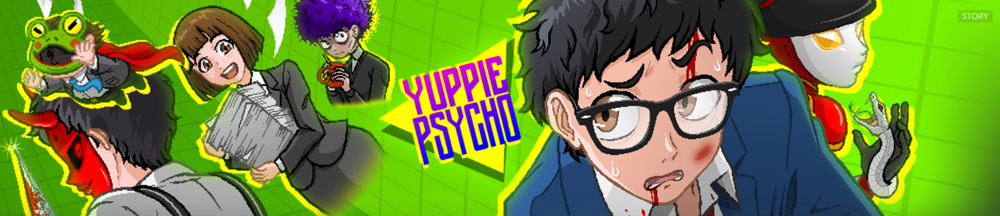
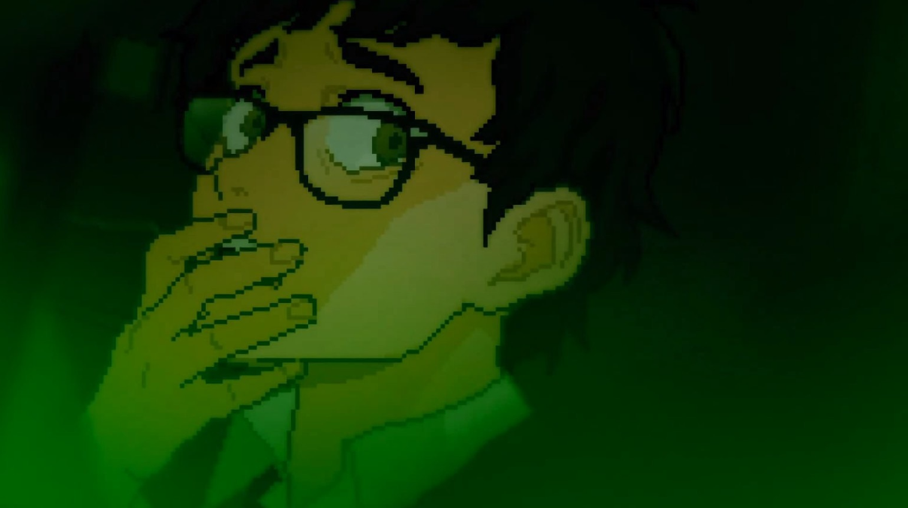

Yuppie Psycho is a strange game. It's a 2D adventure style game where most of the gameplay involves exploring locations, avoiding traps, and collecting items and keys.
The thing that makes this game more interesting is its bizzare and creepy/horror story and it's interesting visuals.
It all takes place in one day in the office building and it's short and sweet. I enjoyed it. Has an old school retro horror creepy pasta type vibe.
